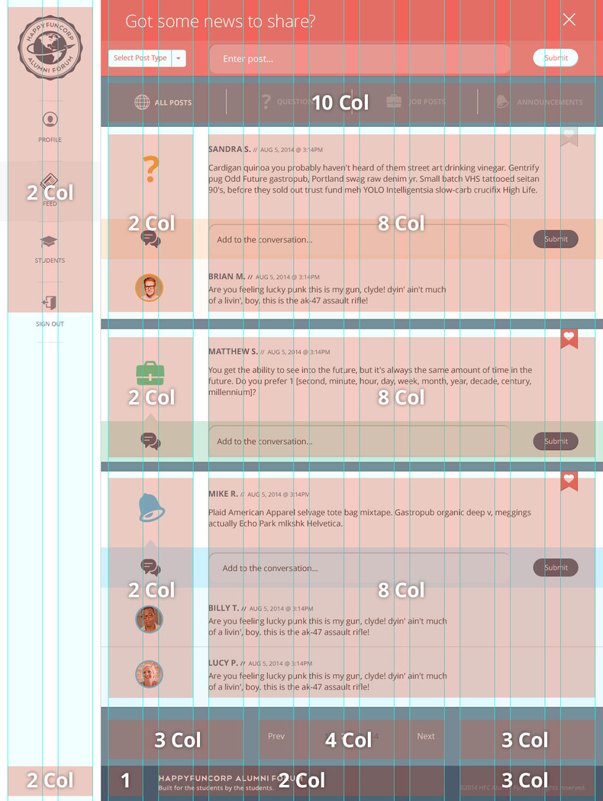

We are a big fan of Bootstrap here at HappyFunCorp. While there are some arguments to be made if Bootstrap in particular is all that, or if Foundation is better for a given thing, its clear that starting with some sort of CSS framework is smarter than trying to roll everything yourself. [1]
There are three major complaints with using bootstrap.
- All of the sites look the same.
- There are so many classes in the HTML where they don’t strictly belong
- It’s a whole bunch of stuff that you don’t need.
These are all a reflection of people not really pulling Bootstrap apart enough to understand how to use it as a tool. Sticking a link to bootstrapcdn and using standard classes works until it doesn’t, and using the LESS or SASS version directly gives you a lot more power. You can customize things using variables to make them look the way that you want without fighting the framework. You can get rid of the “unnecessary” classes to give it some semantic loving. And, if you so choose, you can only include the parts of it that you want.
We prefer SASS, so let’s look at how you would lay out a site like this using bootstrap-sass. (At the level that we will be speaking about it, it’s the same when using the LESS version.)

The Twelve Column Grid: How does it work?
This design is laid out nicely using the a grid of 12 columns. There’s a 2 column side bar, and then a 10 column main content bar with columns inside of that. Bootstrap has a 12 column grid by default. Should be easy right? Read on.
The way that the Bootstrap grid works to create a set of .col-* classes, for each column width and each device size. The width is calculated as a percentage, $column / $grid-columns, and they are float: left with the left and right margin of $gutter-width / 2. The width property is basically wrapped in a media query, so that when the view point is out of bounds then it defaults to full width, and the columns become rows.
In order for the margins to work on the beginning and end of the rows, you need to wrap everything in a .container class, put .rows in side of that, and then put in your content using one of the .col-* classes to represent columns of certain widths and certain breakpoints. The .row class defines both a new row as well as a nested grid. There is negative margin (of $gutter-width / 2 naturally) to make the first and last column line up correctly, and every time you have a .row the “percentage width” is effectively recalculated based upon that container.
The post The Subtle Magic Behind Why the Bootstrap 3 Grid Works has a great visual walk through of what that means.
In the example above, the over all structure looks like one really big row, with a col-*-2 side bar, and a col-*-10 main content area. The sidebar height is pretty independent of the content height, so there’s no way to split up the content into multiple rows. Inside of the main content area, we want to have a row of col-*-10 and then a bunch of col-*-2 and col-*-8 that match up to the overall grid of the page. Lower down on the page there are col-*-3, col-*-4 and a col-*-3.
The problem is that if we want to have the overall page be 2 - 10, we’ll need to define a row inside of the “content” area of the site. But if we define a row inside of the huge, page spanning col-*-10 that represents the content area, that will give us a nested grid of twelve columns. And so you’ll end up with a wonky 14 column grid, where the “first 2 columns” are one size, and the other “12” columns are another size. In other words, the nest grid won’t match up with the “page grid” that we want to lay things out on.
Here’s the outline of what we want to make right, but isn’t:
.container
.row
.col-sm-2
Sidebar content
.col-sm-10
.row
.col-sm-2
avatars and icons
.col-sm-8
comment textLets take a look at how we want it to look like, and a couple of different variants. The first row here is the “page grid” version, which we want to mimic in our design. The three rows below it are attempts to make the bootstrap grid work using the built in classes. None of them really match up:

The nest grid doesn’t line up with the outer page grid.
- Using a nested row, with col-sm-2 and col-sm-8 doesn’t work because we are in a 12 column nested grid and so the col-sm-2 is too small, and the col-sm-8 doesn’t go to the end of the row.
- The first way of “making it add up to 12”, 2 + 10, leaves the “avatar” row too narrow.
- The second way, 3 + 9, leaves the avatar row too wide.
Maybe for your needs #2 or #3 is good enough. And indeed, if you stick with the stock version of the bootstrap css, these are your two choices. But if we want to make it work exactly right, we’ll need to dig deeper into the way that the column classes are defined, and use the Bootstrap mixins to define our layout using semantic classes.
This will solve two problems: 1. We will be using semantic CSS classes so our HTML is cleaner. 2. We will actually be able to lay out the page correctly.
Let’s go a little deeper.
How col- classes are defined
When you load up bootstrap, it uses default variables that you can override to build the the CSS. There are many different things that you can tweak, more than are listed out on the bootstrap customization page, so learning how to navigate and read the source files is pretty important. The key ones for the grid are:
| Variable | Description | Default Value |
|---|---|---|
$grid-columns |
number of grid columns | 12 |
$grid-gutter-width |
space between column content | 30px |
$screen-xs-min |
xs cut off | 480px |
$screen-sm-min |
sm cut off | 768px |
$screen-md-min |
md cut off | 992px |
$screen-lg-min |
lg cut off | 1200px |
The main way that bootstrap handles responsive design in the automatic layout system is by collapsing columns. If the view port is larger than a specific size (as defined in $screen-xs-min, $screen-sm-min etc) then the col- classes have a width specified as a percentage. If the viewpoint is smaller than this, then there is no width and it’s 100%. In that case, if the browser is smaller than this width it displays the “columns” on top of each other. These cut off points are defined as $screen-*-min.
There are 4 different column types, each with their own prefix col-xs-, col-sm-, col-md-, and col-lg-. This means “I will be a column on devices this size or bigger, otherwise I’m going to be a ‘row’.”
These classes work using media queries, and they can be layered: you can also specify multiple column types for a given element. Perhaps on a medium screen you want it three across, while on a small screen two across? <div class="col-md-4 col-sm-6">. When specifying classes on the DOM the order of the -md- and -sm- doesn’t really matter, but when using the mixins it does.
If you want a particular element to always be laid out horizontally, specify col-xs-. In practice, start out with using col-sm- which makes it a column for devices >768px and rows for smaller devices.
Using semantic classes
How do we translate from the bootstrap classes to something semantic? Let’s start first with the bootstrap classes, and then see how to make them semantic.
<div class="container">
<div class="row">
<div class="col-sm-2">
Sidebar
</div>
<div class="col-sm-10">
<div class="row">
<div class="col-sm-2">
avatar area
</div>
<div class="col-sm-8">
content area
</div>
</div>
<div class="row">
<div class="col-sm-2">
avatar area
</div>
<div class="col-sm-8">
content area
</div>
</div>
</div>
</div>
</div>Lets replace the bootstrap classes with something more meaningful, and then write some scss to have it use the class properties that are defined in bootstrap:
<div class="container">
<div class="main_body">
<div class="sidebar">
Sidebar
</div>
<div class="main_content">
<div class="item">
<div class="avatars">
avatar area
</div>
<div class="content">
content area
</div>
</div>
<div class="item">
<div class="avatars">
avatar area
</div>
<div class="content">
content area
</div>
</div>
</div>
</div>
</div>There are two different ways to pull properties from one class to another in SASS. The straightforward was is to have one class @extend another. The plus side of this is that you don’t need to do anything special to make it work, SASS can just figure it out on it’s own and when you are writing CSS you don’t need to do anything differently. The downside is that if you have a whole set of class properties that need to work together, for example if you are using media queries to change things on different sizes, @extend may only get you part of what you want.
Lets use the extend method to turn the above into what we want.
.main_body {
@extend .row;
.sidebar {
@extend .col-sm-2;
}
.main_content {
@extend .col-sm-10;
}
.item {
@extend .row;
.avatars {
@extend .col-sm-2;
}
.content {
@extend .col-sm-10;
}
}
}At this point, the bootstrap-classes-in-the-html should render the same as the semantic-classes-with-sass-css version. But it’s still not what we want.
Mixins
You can look at the source of the Bootstrap-Sass mixins, which is what we will be using to make the layout. If you want to understand how the normal grid classes are generated, look at the main grid.scss file and trace the make-grid method. This follows a slightly different code path than the mixins that we will be using directly, but is helpful to really understand what is going on under the hood.
| Mixin | “Standard Class” | Description |
|---|---|---|
| @mixin container-fixed() | .container |
Creates a .container-type class |
| @mixin make-row() | .row |
Creates a .row-type class |
| @mixin make-xs-column($columns) | col-xs-$columns |
Creates col-xs--type column of a specific width |
| @mixin make-sm-column($columns) | col-sm-$columns |
Creates col-sm--type column of a specific width |
| @mixin make-md-column($columns) | col-md-$columns |
Creates col-md--type column of a specific width |
| @mixin make-lg-column($columns) | col-lg-$columns |
Creates col-lg--type column of a specific width |
(There are also mixins for -offset, -pull, and -push variants, you can just layer as many in as you need.)
The format in your SASS will look something like this:
.main_body {
@include make-row();
}The @include method is actually calling a SASS function to generate the properties. We’re going to use this to property up our semantic classes:
.main_body {
@include make-row();
.sidebar {
@include make-sm-column( 2 );
}
.main_content {
@include make-sm-column( 10 );
}
.item {
@include make-row();
.avatars {
@include make-sm-column( 2 );
}
.content {
@include make-sm-column( 8 );
}
}
}OK, so this is like our first example above, and it looks like this:
So we’ve managed to clean up the class names, but we still don’t have it working.
Redefining grid-columns
The trick here is to realize that SCSS is actually evaluated top down, and by the time it gets to our code the previous properties have already been generated. If we change $grid-columns to 10 above the .item definition and then set it back to 12 immediately below, when the functions are called they will recalculate the column width percentages. Like so:
.main_body {
@include make-row();
.sidebar {
@include make-sm-column( 2 );
}
.main_content {
@include make-sm-column( 10 );
}
$grid-columns: 10;
.item {
@include make-row();
.avatars {
@include make-sm-column( 2 );
}
.content {
@include make-sm-column( 8 );
}
}
$grid-columns: 12;
}Which finally yields:
It’s almost too easy!
Ordering includes
The final thing to mention is that if you want to do something like <div class="col-md-4 col-sm-6"> using semantic CSS, you need to make sure that you order the @includes from small to large to make sure that the correct media query gets triggered:
.awesome-class {
@include make-sm-column( 6 );
@include make-md-column( 4 );
}This translates into:
.awesome-class {
position: relative;
min-height: 1px;
padding-left: 15px;
padding-right: 15px;
position: relative;
min-height: 1px;
padding-left: 15px;
padding-right: 15px;
}
@media (min-width: 768px) {
.awesome-class {
float: left;
width: 50%;
}
}
@media (min-width: 992px) {
.awesome-class {
float: left;
width: 33.3333333333%;
}
}If you reverse the orders of the @includes, then the order the of the media queries will be reversed in the CSS, and the col-md-4 would get shadowed. That’s why the order is important.
and in conclusion
You need to know how to use your tools. Bootstrap is really a CSS framework that you can use to build your site, and using the SASS or LESS version lets you do almost anything you want. If you just use the standard compiled version, your site will look the same as everyone else’s (which is largely fine because it looks pretty good by default) and you will be constrained with what you can do (which is largely lame, having your tools dictate your design.)
In someways, the documentation of Bootstrap is great,but it’s missing a larger, how do you really use it in the real world point of view. This post is excerpted from a Bootstrap-Sass book we are writing for our Technology Academy because we couldn’t find a good resource to really show people how to make things work with bootstrap.
Footnotes
If you do want to roll everything yourself, you would do well to read this post by @fat about how fucking good Medium’s CSS is. @fat is one of the authors of Bootstrap.